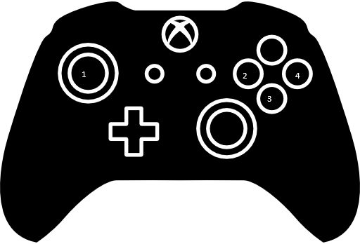

Usa las teclas W,A,S,D o flechas para moverte y la barra espaciadora para interactuar o las flechas de arriba,abajo,izquierda,derecha.
Presiona clic derecho para abrir el menu, regresar y la espada funciona como un raton normal con clic izquierdo.
la barra espaciadora sirve tambien para seleccionar en caso que el raton no sirva y precionar Esc para retroceder.

(1) El JOYSTICK tiene arriba,abajo,izquierda,derecha y la mezcla entre los 4.
(2) X funciona como clic derecho o selección.
(3) A al mantenerlo presionado podras correr.
(4) B Sirve para abrir el menu,cancelar,regresar.